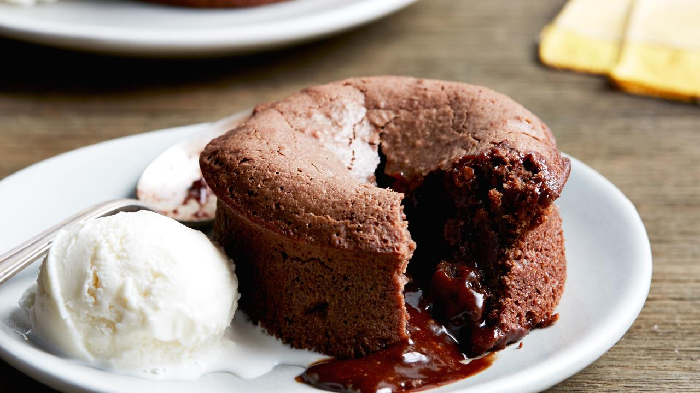

Peanutbutter Chocolate Lavacake Recipe

Description
This is arguably the best recipe I have ever found. I made this for my girlfriend in college and it was a major hit.
Anywhere and everywhere I go people now ask me for these lavacakes. They seem complex, but are in fact easy to make.
Ingredients
- 1 Stick of butter
- 2 oz of bittersweet chocolate
- 2 oz of semisweet chocolate
- 1 1/4 cups of powdered sugar
- 2 whole eggs
- 3 egg yolks
- 1 teaspoon vanilla
- 1/2 cup of all purpose flour
- peanut butter
Directions
- Preheat the oven to 425 degrees F. Spray four custard cups with baking spray and place on a baking sheet.
-
Microwave the butter, bittersweet chocolate and semisweet chocolate in a large bowl on high until the butter is melted,
about 1 minute. Whisk until the chocolate is also melted. Stir in the sugar until well blended.
Whisk in the eggs and egg yolks, then add the vanilla. Stir in the flour. Pour only part of the mixture into the ceramic cups about 1/3 of the cup full.
- Take a dollop of peanut butter and place it into the cup mixture. Then pour more of the original mixture ontop until the peanut butter is no longer visible.
- Place the ceramic cups into the oven and bake until the sides are firm and the centers are soft,
about 13 minutes. Let stand 1 minute. Invert on individual
plates while warm and serve with vanilla ice cream.